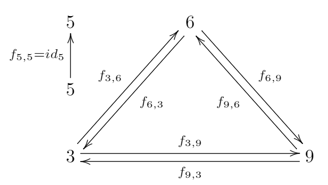

下のパターンの規則性を0から10の値で評価してください．
全く規則性がない＝0，どちらでもない＝5，非常に規則性がある＝10
Please evaluate the regularity of the patterns below with a value from 1 to 10.
There is no regularity = 0, Neither = 5, Very regular = 10

全く規則性がない
There is no regularity
非常に規則性がある
Very regular
5
0 / 16